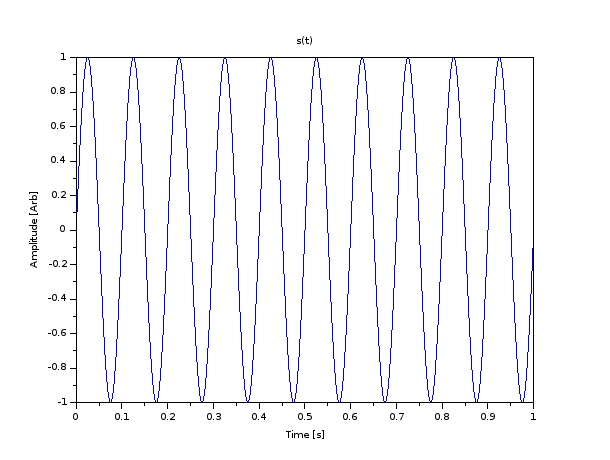
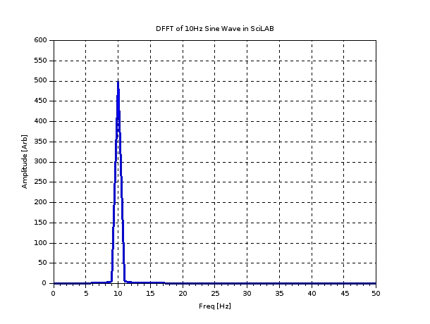
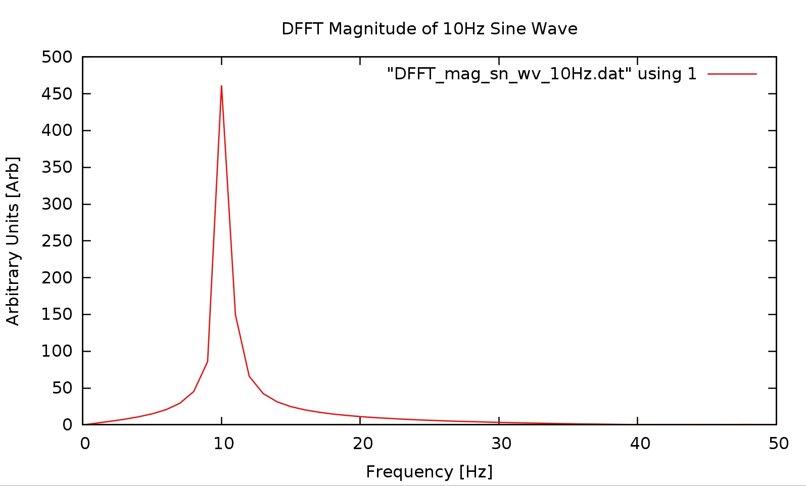
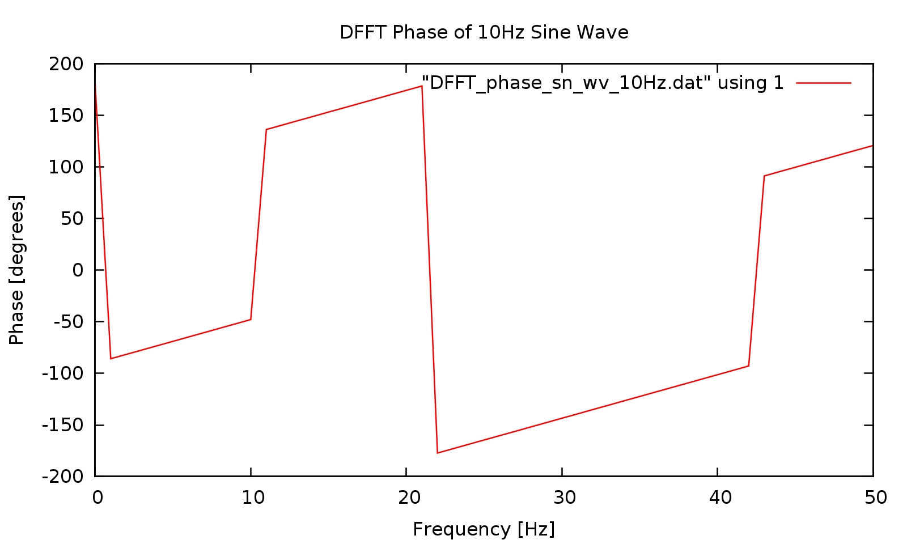

Sine Wave at 10Hz#
Introduction#
This example demonstrates the computation of the Discretized Fourier Transform of a sine wave at 10 Hz using the FFTW3 library in Fortran. The sine wave is generated using SciLAB and the DFFT is computed using the Fortran 2003 code. The time domain and frequency domain plots are generated using GNUPlot.
SciLAB Code#
The SciLAB code to generate the sine wave is as follows:
// Generate a sine wave at 10 Hz
// Frequency components of a signal
//----------------------------------
// build a signal sampled at 1000hz containing a pure frequency
// at 10Hz
sample_rate=1000;
frequency=10;
// time vector which goes from 0 to 1 with a step of 1/sample_rate
t = 0:1/sample_rate:1;
// number of samples
N=size(t,'*'); //number of samples
// generate the signal
s=sin(2*%pi*frequency*t);
// compute the fft of the signal
y=fft(s);
//s is real so the fft response is conjugate symmetric and we retain only the first N/2 points
f=sample_rate*(0:(N/2))/N; //associated frequency vector
// number of samples
n=size(f,'*')
// plot the fft
h=0;
scf(h);
xset('window',h);
xtitle('DFFT of 10Hz Sine Wave in SciLAB', 'Freq [Hz]', 'Amplitude [Arb]');
plot(f,abs(y(1:n)))
// plot the time domain signal
h=1;
scf(h);
xset('window',h);
xtitle('s(t)', 'Time [s]', 'Amplitude [Arb]');
plot(t, s);
Execute the SciLAB Code#
To execute the SciLAB code, copy and paste the code into the SciLAB console and press Enter. The time domain and frequency domain plots will be displayed. The results are shown below:
Time Domain Plot#
Frequency Domain Plot#
Saving The Time Domain Data#
The time-domain data is selected in SciLAB and saved into a CSV file.
Processing of CSV File into a Format Suitable for Input into the Fortran 2003 DFFT Code#
Since the output of SciLAB is a comma separated value (CSV) file, a method is needed that will process that file into another file, where the commas are removed and each data element is on a separate line. Additionally, a the data elements need to be reformatted into fixed floating point, since the “e” floating point format was noticed to possibly cause errors when input into the FFTW3 algorithm. These operations were done using a Python script, with its powerful object-oriented file techniques and its included CSV library. The Python script is shown below:
#!/usr/bin/python3
import sys
import csv
import os
# Assign constants for better code readability
first_arg = 1
second_arg = 2
# Call the system to get the command line arguments and pull out items from the list
input_file = sys.argv[first_arg]
intermediate_file = 'intermediate.dat'
output_file = sys.argv[second_arg]
# Simple string manipulation that traverses text file until EOF
# and calls method to replace commas with newline characters
with open(input_file) as infile, open(intermediate_file, "w") as outfile:
for line in infile:
outfile.write(line.replace(",", "\n"))
# Close the input file, as it is no longer needed.
infile.close()
# Now go through the intermediate file (the file that contains one data element per line)
# and reformat all of the data elements into fixed floating point with 20 decimal precision.
with open(intermediate_file) as infile, open(output_file, "w") as outfile:
for line in infile:
outfile.write('%20.20f\n' % float(line))
# Close the intermediate file and final output file.
infile.close()
outfile.close()
# Clean away the intermediate file. The next line may be commented out if the intermediate
# file is required.
os.remove(intermediate_file)
Execute the Python Script#
Run by typing:
./convert_csv.py infile.csv outfile.dat
where infile.csv is the data file in CSV format, and outfile.dat is the processed file Obtain the line count of the processed file by typing:
wc -l outfile.dat
Fortran 2003 Code#
The Fortran 2003 code to compute the Discretized Fourier Transform of the sine wave at 10 Hz is as follows:
! DFFT from Processed Data File
! Written by Mark Khusid 2015
!
! 2018
! Version 6
! Increased amount of command line arguments to 5 from 3. The added two were sample rate and number of periods.
! Cleaned up indentation and formatting.
! Modified the write_DFFT_to_file subroutine to output not only the DFFT data element but also the corrected frequency
! on each line of the data file. The DFFT data element and corrected frequency are separated by a space
! Obtained the corrected frequency based on the sampe rate and the next power of two of the total number of samples (i.e. 100 samples -> next power of 2 = 128.)
! Since there are num_bins_int number of data elements in FFT array, and the FFT array is symmetric, we divide the magnitude by half the num_bins_int to get the normalized magnitude.
!
! Version 5
! Commented out debug code and rearranged some inconsequential lines.
!
! 2015
! Version 4
! Numerous fixes. Changed code to allocate memory based on the next power of 2 relative
! to the number of element in the input file. For example, a data file with 1000 data elements
! will cause arrays to be allocated with 1024 elements. This is done to prevent errors in the FFT.
! Extra array space above and beyond what is in data file is padded with zeros.
! Reformatted most of the debug output.
! Used ATAN2, separate variables and formatting to ensure that small values of the real part will not
! cause phase errors.
!
! Version 3
! This version counts the number of data elements in the file automatically.
! This version is rewritten to make use of subroutines.
module MKDynamics_FFT
use, intrinsic :: iso_c_binding
include 'fftw3.f03'
type(C_PTR) :: plan
! Input file name, output file name and number of bins, sample rate, number of periods
integer, parameter :: num_expected_args = 5
! FFTW input array
real(C_DOUBLE), dimension(:), allocatable :: in
! FFTW output array
complex(C_DOUBLE_COMPLEX), dimension(:), allocatable :: out
! Holds the data read from the input file
real(C_DOUBLE), dimension(:), allocatable :: temp_real_array
! Used to perform complex math
real(C_DOUBLE) :: magnitude, phase, temp_real
! For checking if EOF reached
integer :: EOF_marker
! For checking if files opened successfully
integer :: file_good1, file_good2, file_good3
! For checking if files written successfully
integer :: good_write1, good_write2
! Counter used to traverse arrays
integer :: i
! Contains number of arguments for verification of proper command line call
integer :: num_args
! Holds obtained number of bins
integer :: num_bins_int
! Holds memory allocation status of arrays
integer :: status1, status2, status3
! Holds file names
character(len=80) :: input_file, output_mag_file
character(len=80) :: output_phase_file
! Holds sample rate argument string that will be converted to an integer
character(len=80) :: sample_rate_string
! Holds number of periods argument string that will be converted to an integer
character(len=80) :: num_periods_string
! Used to calculate the next power of 2 above input file size. i.e. 1000 element array is increased to 1024 elements
real :: num_log2_bins_real
integer :: num_bins_int_pow2
! Used to hold the sample rate of the input data file
integer :: sample_rate
! Used to hold the number of periods of the input data file
integer :: num_periods
! Used to hold the total number of samples within the input data file
integer :: num_samples
contains
subroutine close_files_and_exit
close(1)
close(10)
close(20)
print *, 'Files closed.....'
print *, 'Exiting.....'
stop
end subroutine close_files_and_exit
subroutine close_files_deallocate_and_exit(state)
integer :: state
close (1)
close (10)
close (20)
deallocate (in)
deallocate (out)
deallocate (temp_real_array)
if (state .eq. -1) then
print *, 'Files closed and memory deallocated'
print *, 'Exiting.....'
stop
else
print *, 'Files closed and memory deallocated'
end if
end subroutine close_files_deallocate_and_exit
! From stack overflow
elemental subroutine str2int(str,int)
implicit none
! Arguments
character(len=*),intent(in) :: str
integer,intent(out) :: int
read(str,*) int
end subroutine str2int
subroutine get_args
! Verify that the number of arguments is correct. Should be 5, otherwise display
! error and terminate program
num_args = command_argument_count()
if (num_args .ne. num_expected_args) then
print *, 'Improper number of arguments'
print *, 'Argument list:'
print *, '<input file name> <output magnitude file name> <output phase file name> <sample rate> <number of periods>'
call close_files_and_exit ! Graceful exit, no cleanup
end if
! Call subroutines that obtain the command line arguments and load the appropriate variables
call get_command_argument (1, input_file)
call get_command_argument (2, output_mag_file)
call get_command_argument (3, output_phase_file)
call get_command_argument (4, sample_rate_string)
call get_command_argument (5, num_periods_string)
! Debug code that ensures command line arguments were passed in properly
print *, 'The first argument is (input file name) ->'
print *, input_file
print *, 'The second argument is (output magnitude file name) ->'
print *, output_mag_file
print *, 'The third argument is (output phase file name) ->'
print *, output_phase_file
print *, 'The fourth argument is (sample rate) as string ->'
print *, sample_rate_string
call str2int(sample_rate_string, sample_rate)
print *, 'The fourth argument is (sample rate) as integer ->'
print *, sample_rate
print *, 'The fifth argument is (number of periods) as string ->'
print *, num_periods_string
call str2int(num_periods_string, num_periods)
print *, 'The fifth argument is (number of periods) as integer ->'
print *, num_periods
end subroutine get_args
subroutine open_files
! Begin to open files
open (unit=1, file=TRIM(input_file), status="old", IOSTAT=file_good1, form="formatted", access="sequential", action="read")
!open (unit=1, file=TRIM(input_file), IOSTAT=file_good1)
if (file_good1 .ne. 0) then
print *, 'Error opening input file!'
call close_files_and_exit ! Graceful exit, no cleanup
else if (file_good1 .eq. 0) then
print *, 'Input file opened successfully...'
end if
open (unit=10, file=TRIM(output_mag_file), status="replace", IOSTAT=file_good2, form="formatted", access="sequential")
if (file_good2 .ne. 0) then
print *, 'Error creating output magnitude file!'
call close_files_and_exit ! Graceful exit, no cleanup
else if (file_good2 .eq. 0) then
print *, 'Output magnitude file created successfully...'
end if
open (unit=20, file=TRIM(output_phase_file), status="replace", IOSTAT=file_good3, form="formatted", access="sequential")
if (file_good3 .ne. 0) then
print *, 'Error creating output phase file!'
call close_files_and_exit ! Graceful exit, no cleanup
else if (file_good3 .eq. 0) then
print *, 'Output phase file created successfully...'
end if
! Debug code follows. Tests to see if file opened properly.
read (unit=1, fmt='(f20.10)', IOSTAT = EOF_marker) temp_real
print *, 'The status of EOF_marker is'
print *, EOF_marker
print *, 'The first element read was'
print *, temp_real
! Debug code ends
end subroutine open_files
subroutine get_num_data_elements
! Traverse through data file and count number of data elements in file
! Get first data element from file to see whether it is the EOF character
print *, 'Entering get_num_data_elements procedure'
print *
i = 1
rewind(1)
read (1, '(f30.20)', IOSTAT = EOF_marker) temp_real
! Debug code starts here
write (*, '(a, i4)') 'The counter is ->', i
write (*, '(a, f30.20)') 'The first data element was ->', temp_real
write (*, '(a, i4)') 'The EOF marker is ->', EOF_marker
! print *
! print *
! Debug code ends here
if (EOF_marker < 0) then
print *, 'ERROR: Input file is empty'
call close_files_and_exit ! Graceful exit, no cleanup
end if
! Establish loop that will count number of elements in file
count_loop: do
if (EOF_marker < 0) then
print *, 'EOF reached'
exit count_loop
else
i = i + 1
read (1, '(f30.20)', IOSTAT = EOF_marker) temp_real
!write (*, '(a, i4, a, f30.20)'), 'The data element at', i, ' was ->', temp_real
!write (*, '(a, i4)'), 'The EOF_marker is ->', EOF_marker
end if
end do count_loop
! Copy over the number of counted elements into the num_bins_int variable less one for the EOF character
num_bins_int = i - 1
write (*, '(a, i10)') 'The number of lines in the input file is ->', num_bins_int
print *, 'Exiting get_num_data_elements procedure'
print *
end subroutine get_num_data_elements
subroutine allocate_memory
! Allocate memory based on the number of bins
! The number of bins will be used to find the next power of 2.
! Display success status of memory allocation
! If there is a problem with memory allocation, display error and terminate
print *, 'Entering allocate_memory procedure'
print *
num_log2_bins_real = log(real(num_bins_int))/log(real(2))
write (*, '(a, f20.4)') 'The closest log base 2 bins is (as real)->', num_log2_bins_real
num_bins_int_pow2 = 2**(ceiling(num_log2_bins_real))
write (*, '(a, i8)') 'The closest number of power of 2 bins is (as integer)->', num_bins_int_pow2
allocate (in(num_bins_int_pow2), stat=status1)
print *
write (*, '(a, l)') 'Was memory allocated successfully for input array? ->', allocated(in)
if (status1 .ne. 0) then
print *, 'Memory allocation error on input array'
call close_files_and_exit ! Graceful exit, no cleanup
end if
write (*, '(a, i10)') 'Input Array allocated with size ->', size(in)
allocate (out(num_bins_int_pow2), stat=status2)
print *
write (*, '(a, l)') 'Was memory allocated successfully for output array? ->', allocated(out)
if (status2 .ne. 0) then
print *, 'Memory allocation error on output array'
deallocate (in)
call close_files_and_exit ! Graceful exit, no cleanup
end if
write (*, '(a, i10)') 'Output Array allocated with size ->', size(out)
allocate (temp_real_array(num_bins_int_pow2), stat=status3)
print *
write (*, '(a, l)') 'Was memory allocated successfully for scratchpad array? ->', allocated(temp_real_array)
if (status3 .ne. 0) then
print *, 'Memory allocation error on scratchpad array'
deallocate (in)
deallocate (out)
call close_files_and_exit ! Graceful exit, no cleanup
end if
write (*, '(a, i10)') 'Scratchpad Array allocated with size ->', size(temp_real_array)
print *, 'Exiting allocate_memory procedure'
print *
end subroutine allocate_memory
subroutine read_from_file_into_array
! Establish a loop that reads the file from 1 to num_bins_int
! Bring file pointer for input file back to first element
print *, '***** Subroutine read_from_file_into_array ******'
rewind(1)
do i=1, num_bins_int
read (1, '(f30.20)', IOSTAT = EOF_marker) temp_real_array(i) ! read data element from file
! Debug code starts here
!write (*, '(a, i4)'), 'The EOF marker is ->', EOF_marker
!write (*, '(a, i4)') 'The counter is ->', i
!write (*, '(a, 30f30.20)') 'The data element was -> ', temp_real_array(i)
!print *
!print *
! Debug code ends here
end do
print *, 'Padding remainder of array with zeros to fill up to size of next power of 2....'
do i=num_bins_int+1, num_bins_int_pow2
temp_real_array(i) = 0.0
!write (*, '(a, i4)') 'The counter is ->', i
!write (*, '(a, 30f30.20)') 'The data element was -> ', temp_real_array(i)
end do
print *, 'Exiting read_from_file_into_array procedure'
print *
end subroutine read_from_file_into_array
subroutine compute_DFFT
! *************** FFT COMPUTATION SECTION **********************
! Establish array of reals that is the input the FFTW3 function
print *, 'Entering compute_DFFT procedure'
print *
in = temp_real_array
print *, 'num_bins_int_pow2 ->', num_bins_int_pow2
! Use built in fucntion to create FFTW3 plan. Tells FFTW3 what to do.
plan = fftw_plan_dft_r2c_1d((num_bins_int_pow2), in, out, FFTW_ESTIMATE)
!print *, 'The FFTW3 plan is ->'
!call fftw_print_plan(plan)
print *
print *
! Debug code starts here
!print *, "The contents of the input array is ->"
! do i = 1,num_bins_int_pow2
! write (*, '(f30.20)'), in(i)
! end do
! Debug code ends here
! Execute FFTW3 to produce DFFT on data from file stored in array
print *, "Executing DFFT on input array..."
call fftw_execute_dft_r2c(plan, in, out)
print *, "DFFT execution successfull"
! Debug code starts here
print *, "The contents of the output array is ->"
! do i = 1,num_bins_int_pow2
! write (*, '(f30.20, f30.20)') out(i)
! end do
! Debug code ends here
print *, 'Exiting compute_DFFT procedure'
print *
end subroutine compute_DFFT
subroutine write_DFFT_to_file
real :: real_float, imag_float, corrected_frequency
real :: pi
!integer(kind=8) :: real_int, imag_int
print *, 'Entering write_DFFT_to_file procedure'
print *
pi = 4*atan(1.0)
num_samples = sample_rate * num_periods
write (*, '(a, i8)') 'The number of total number of samples is -> ', num_samples
! Traverse through output array that contains the complex DFFT, calculate magnitude and
! write results to output file. Since output is symmetric, we only want half of the output array.
! The magnitude and phase will have each data element along side its corresponding corrected frequency
! in two columns, separated by a space, i.e. DFFT_magnitude corrected_frequency, on each line in the output file.
!do i = 1, 100
do i = 1,(num_bins_int_pow2/2)
!do i = 1, (num_bins_int/2)
! Lines below for debug
!write (*, '(a, i4)'), 'The counter i is ->', i
!write (*, '(a, f30.20, f30.20)'), 'The DFFT data element is -> ', out(i)
! Obtain the real part of the complex data stored in output array as float
real_float = real(out(i))
!write (*, '(a, f30.20)'), 'The value of real_float is ->', real_float
! Obtain the imaginary part of the complex data stored in output array as float
imag_float = aimag(out(i))
!write (*, '(a, f30.20)'), 'The value of imag_float is ->', imag_float
! Obtain the corrected frequency based on the sampe rate and the next power of two of the total number of samples (i.e. 100 samples -> next power of 2 = 128.)
!corrected_frequency = floor(float(i) * (float(sample_rate)/float(num_bins_int_pow2)))
corrected_frequency = (float(i) * (float(sample_rate)/float(num_bins_int_pow2)))
! Since there are num_bins_int number of data elements in FFT array, and the FFT array is symmetric, we divide the magnitude by half the num_bins_int to get the normalized magnitude.
magnitude = (sqrt((real_float**2) + (imag_float**2)))/float(num_bins_int/2)
phase = (atan2(imag_float,real_float))*(180/pi)
!write (*, '(a, i8, a, f30.20, a, f30.5)') 'Counter -> ', i, &
!' Magnitude -> ', magnitude, ' Frequency -> ', corrected_frequency
!write (*, '(a, f30.20)'), 'The phase is -> ', phase
!print *
! Write out the DFFT magnitude, a space character and the corrected frequency
write (10, '(f30.20, a, f30.20)', IOSTAT = good_write1) magnitude, ' ', corrected_frequency
! Write out the DFFT phase, a space character and the corrected frequency
write (20, '(f30.20, a, f30.20)', IOSTAT = good_write2) phase, ' ', corrected_frequency
if (good_write1 .ne. 0) then
!print *, 'The state of good_write1 is:'
!print *, good_write1
print *, 'Error writing to magnitude file!'
call close_files_deallocate_and_exit(-1)
else if (good_write2 .ne. 0) then
!print *, 'The state of good_write2 is:'
!print *, good_write2
print *, 'Error writing to phase file!'
call close_files_deallocate_and_exit(-1)
end if
end do
! Tell user that output file was written successfully
if (good_write1 .eq. 0) then
print *, 'Output magnitude file written successfully....'
endif
if (good_write2 .eq. 0) then
print *, 'Output phase file written successfully....'
endif
! Deallocate memory held by plan
call fftw_destroy_plan(plan)
print *, 'Plan destroyed successfully....'
!
! ! The following debug code checks to see if the Inverse DFFT will produce the original input data
! ! print *, "Output file written successfully!"
! !
! ! Swapping arrays to see if I can retrieve signal in time domain from signal in frequency domain
! ! in = out
! !
! ! plan = fftw_plan_dft_1d(n, in, out, FFTW_BACKWARD, FFTW_ESTIMATE)
! !
! ! print *, "The contents of the input array is ->"
! ! do i = 1,num_bins_int
! ! print *, in(i)
! ! end do
! !
! ! print *
! !
! ! print *, "Executing DFT on input array..."
! ! call fftw_execute_dft(plan, in, out)
! !
! ! print *, "The contents of the output array is ->"
! ! do i = 1,num_bins_int
! ! print *, out(i)
! ! end do
! !
! ! print *
! !
! ! call fftw_destroy_plan(plan)
print *, 'Exiting write_DFFT_to_file procedure'
print *
end subroutine write_DFFT_to_file
end module MKDynamics_FFT
program module_test
use MKDynamics_FFT
implicit none
print *, 'MKDyanmics_FFT Program Version 5.'
call get_args
call open_files
call get_num_data_elements
call allocate_memory
call read_from_file_into_array
call compute_DFFT
call write_DFFT_to_file
call close_files_deallocate_and_exit(0)
print *, 'Program completed successfully'
print *, 'Exiting.....'
end program module_test
Compile the Fortran 2003 Code#
To compile the Fortran 2003 code, type the following command:
gfortran -o dfft_fftw3 dfft_fftw3.f08 -lfftw3
Execute the Fortran 2003 Code#
To execute the Fortran 2003 code, type the following command:
./dfft_fftw3 outfile.dat DFFT_mag_file.dat DFFT_phase_file.dat
where outfile.dat is the output of the Python script, DFFT_mag_file.dat is the DFFT magnitude DFFT_phase_file.dat is the DFFT phase (if applicable).
Visualize the DFFT Results#
The DFFT results are visualized using GNUPlot. The GNUPlot script is as follows:
set term wxt 0
set xrange [0:50]
set title "DFFT Magnitude of 10Hz Sine Wave"
set xlabel "Frequency [Hz]"
set ylabel "Arbitrary Units [Arb]"
plot "DFFT_mag_file.dat" using 1 with lines
set term wxt 1
set xrange [0:50]
set title "DFFT Phase of 10Hz Sine Wave"
set xlabel "Frequency [Hz]"
set ylabel "Phase [degrees]"
plot "DFFT_phase_file.dat" using 1 with lines
To execute the GNUPlot script, type the following command:
gnuplot -persist plot_dfft.gnu
or start GNUPlot and type the following to load the script:
load 'plot_dfft.gnu'
Results#
The magnitude and phase plots are shown below:
DFFT Magnitude Plot#
DFFT Phase Plot#
Discussion#
The DFFT of the sine wave at 10 Hz was successfully computed using the FFTW3 library in Fortran. The results were visualized using GNUPlot. The magnitude and phase plots are shown above.
The phase plot above displays overall quantization noise and computation noise of FFTW3, since pure frequency sine wave with zero phase should have been a straight line at 0 degrees. This plot gives a feel for the accuracy of the computational engine.
There appears to be good correlation between the DFFT magnitude plot generated by SciLAB and the DFFT magnitude plot generated by the Fortran 2003 code. Of note are is the anomalous phase results in the output of the Fortran 2003 code. It is unknown at this time what is causing it. It would be interesting to see the results on a signal with known phase shift.
Conclusion#
The Discretized Fourier Transform of a sine wave at 10 Hz was successfully computed using the FFTW3 library in Fortran. The results were visualized using GNUPlot. The magnitude and phase plots are shown above.